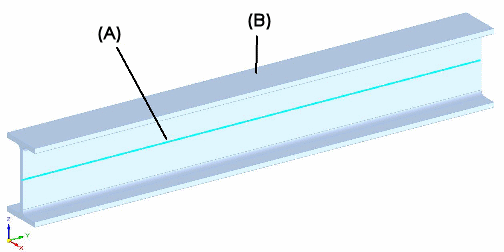
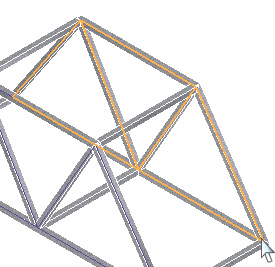
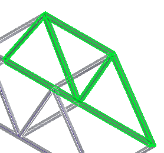
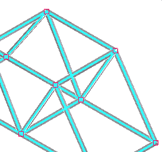

beam curves
Required for simulation of a structural frame model, beam curves are used for placing loads and constraints. Beam curves (A) are offset from the initial beam paths of the frame members (B) to the centroid of beam cross sections.

When the beam path is not aligned with the centroid of the beam cross section, the beam curves may become disjoint. Solid Edge Simulation connects disjoint beam curves automatically with rigid links.
You cannot process a thermal study of a structural frames model if the model contains rigid links.
Beam curves update as the beam geometry or cross section updates.
The initial beam paths:

The beam members:

The beam curves:

-
Beam curves are available on the Simulation tab in the Frame environment.
-
Beam curves are only selectable when the Curve option is active within any load or constraint command.
-
Beam curves for a particular study are displayed only when that study is active.
-
Beam curves can be hidden or shown when you right-click the Geometry collector for the active study and choose either Show beam curve or Hide beam curve. This state is retained when switching between studies.
See the help topic, Analyze a structural frame model.
Look up more details
axial stressbeam cross section
beam element nodes
bending stress
blackbody
boundary condition
buckling analysis
connector region
convection
convergence
coupled study
degrees of freedom (DOF)
finite element analysis
glued connection
harmonic frequency response analysis
heat flux
heat generation
Hookes Law
hydrostatic pressure
inertia relief
linear static analysis
modal analysis
no penetration (linear contact) connection
penalty factor
Poissons Ratio
primary
rigid link connector
search distance
shear stress
specific heat
steady state heat transfer
stress analysis
study
surface emissivity
thermal conductivity
thermal constraint
thermal stress analysis
transient heat transfer
undeformed
united bodies
view factor
Youngs Modulus